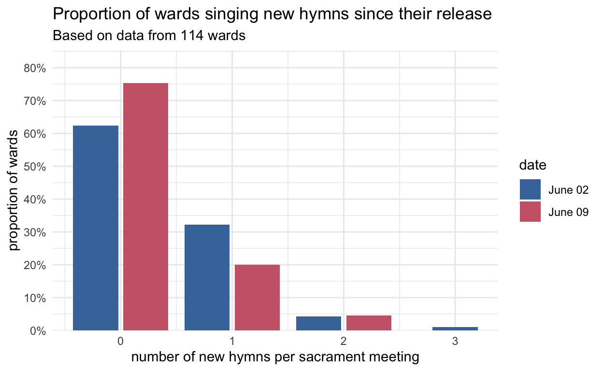

The second Sunday with new hymns!
general
frequency
new hymns
This is the second week since new hymns were introduced! There was a little less hype about it online and I didn’t do as much petitioning (i.e begging) for data, but I did manage to get data from 50 wards. Last week, we saw that a little less than half of wards introduced new hymns, with about two thirds of those singing
Note
Note that this blog post will update as I collect more data. I originally collected data from 39 wards when I first published this post. As more come in, we’ll have a more accurate view of what happened.
So, while slightly less than half of wards sang at least one new hymn during week 1, it looks like there were fewer that sang a new one during week 2. It looks like a little over a quarter of wards sang at least one new hymn during this second week. This figure below shows these numbers and how they have changed from June 2nd to June 9th.
There are lots of reasons for this drop. Many wards appear to be resistant to new hymns entirely, either because they don’t want to introduce them or perhaps because they are not aware of their release. For 35 wards, I have data from both June 2nd and Jun 9th. Around half of them didn’t introduce new hymns either week. About a third introduced a new hymn during one of the two weeks. The rest introduced a new hymn both weeks. Perhaps people were so anxious to sing
Last time, we saw that
| What new hymns were sung on June 9, 2024? | ||
| Based on the wards that sang new hymns | ||
| new hymn | wards | proportion |
|---|---|---|
| Come, Thou Fount of Every Blessing (1001) | 7 | 41.2% |
| As Bread is Broken (1007) | 2 | 11.8% |
| Bread of Life, Living Water (1008) | 2 | 11.8% |
| His Eye Is on the Sparrow (1005) | 2 | 11.8% |
| It Is Well with My Soul (1003) | 2 | 11.8% |
| Gethsemane (1009) | 1 | 5.9% |
| When the Savior Comes Again (1002) | 1 | 5.9% |
| I Will Walk with Jesus (1004) | 0 | 0.0% |
| Think a Sacred Song (1006) | 0 | 0.0% |
| Hail the Day that Sees Him Rise (1201) | 0 | 0.0% |
| He Is Born, the Divine Christ Child (1202) | 0 | 0.0% |
| What Child is This? (1203) | 0 | 0.0% |
| Star Bright (1204) | 0 | 0.0% |
If we compare these proportions to last week, we can get a glimpse into some trends. The figure below shows what proportion of wards sang what hymns each week.
The biggest change is the drop in
As for when during the meeting these new hymns were introduced, it’s hard to say for sure with such sparse data, but there again seems to be a trend of singing new hymns towards the ends of meetings, with the exception of course of sacrament hymns.
| When were new hymns sung in sacramnt meeting? | ||||
| New Hymn | Opening | Sacrament | Intermediate | Closing |
|---|---|---|---|---|
| Come, Thou Fount of Every Blessing (1001) | 1 | 0 | 2 | 4 |
| When the Savior Comes Again (1002) | 0 | 0 | 0 | 1 |
| It Is Well with My Soul (1003) | 0 | 0 | 1 | 1 |
| His Eye Is on the Sparrow (1005) | 1 | 0 | 0 | 1 |
| As Bread is Broken (1007) | 0 | 2 | 0 | 0 |
| Bread of Life, Living Water (1008) | 0 | 2 | 0 | 0 |
| Gethsemane (1009) | 0 | 1 | 0 | 0 |
That’s it for now! I’ll try to post weekly updates over the next few hymns so we can get an idea of how they are being adopted by wards.